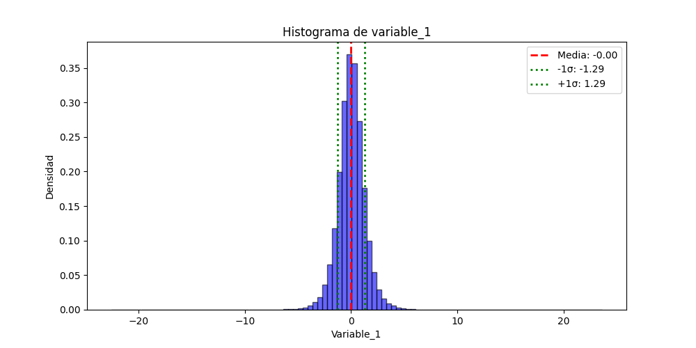
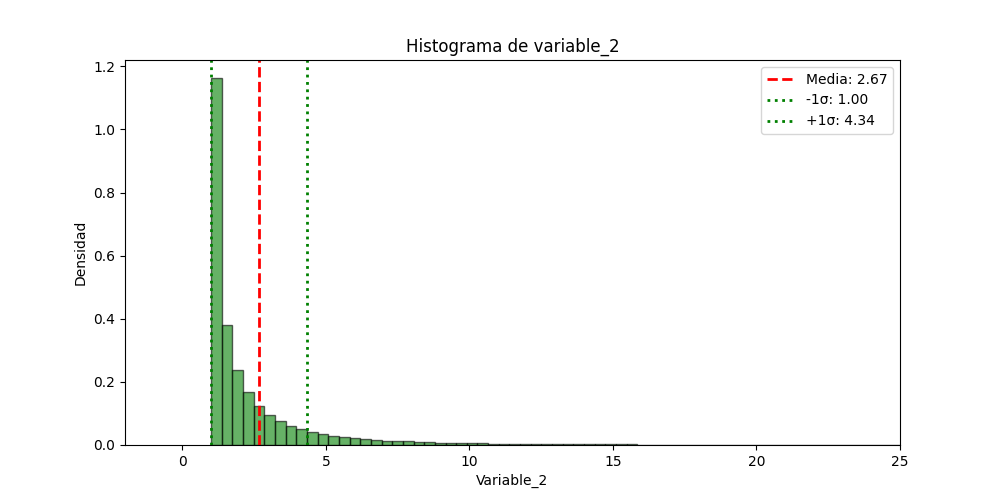
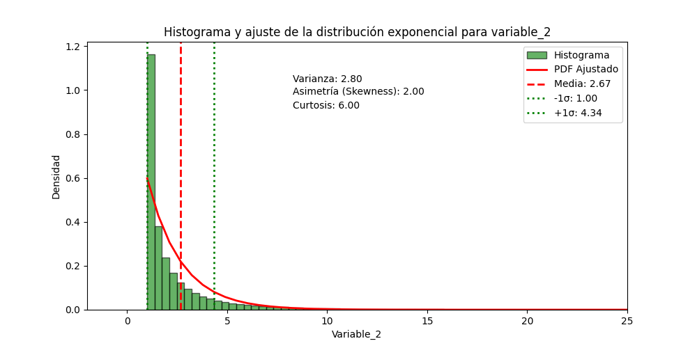

Avance del Proyecto: Análisis de momentos estadísticos
Momentos Estadísticos
Los momentos estadísticos son medidas que describen diferentes aspectos de la distribución de un conjunto de datos. A continuación, se presentan los momentos calculados para las variables variable_1 y variable_2.
- Media: La media es el promedio aritmético de los datos, que indica la tendencia central.
- Varianza: La varianza mide la dispersión de los datos respecto a la media. Se calcula como el promedio de las diferencias al cuadrado entre cada dato y la media.
- Desviación Estándar: La desviación estándar es la raíz cuadrada de la varianza, ofreciendo una medida de la dispersión en las mismas unidades que los datos.
- Asimetría (Skewness): La asimetría mide la simetría de la distribución. Un valor positivo indica que la cola derecha es más larga, mientras que un valor negativo indica una cola izquierda más larga.
- Curtosis: La curtosis mide la "altura" y "ancho" de la distribución. La función
scipy.stats.kurtosis()calcula el exceso de curtosis, que es la diferencia entre la curtosis de los datos y 3 (la kurtosis de una distribución normal). Se clasifica de la siguiente manera:- Leptocúrtica: Exceso de curtosis mayor que 0 (curtosis > 3), indicando colas más pesadas y un pico más alto en comparación con la normal, lo que sugiere más valores extremos.
- Mesocúrtica: Exceso de curtosis igual a 0 (curtosis = 3), lo que sugiere que la distribución tiene colas y un pico similares a una distribución normal.
- Platicúrtica: Exceso de curtosis menor que 0 (curtosis < 3), indicando colas más ligeras y un pico más plano, lo que sugiere menos valores extremos.
- Nota: En el contexto del cálculo de momentos estadísticos, se toma como referencia el valor cero porque se utiliza la librería SciPy, que considera la curtosis de una distribución normal como igual a cero. Esto implica que una distribución con un exceso de curtosis positivo indica colas más pesadas que la normal, mientras que un exceso negativo indica colas más ligeras.
Momentos de variable_1
-
Media:
- Valor: -0.00034
- Interpretación: La media muy cercana a cero sugiere que los datos están distribuidos alrededor del origen, lo que indica que no hay una tendencia significativa en ninguna dirección.
-
Varianza:
- Valor: 1.6720
- Interpretación: Una varianza relativamente alta indica que los datos están bastante dispersos alrededor de la media. Esto sugiere que hay una considerable variabilidad en los datos.
-
Desviación Estándar:
- Valor: 1.2931
- Interpretación: La desviación estándar es una medida de dispersión que indica que, en promedio, los datos se desvían en aproximadamente 1.29 unidades de la media.
-
Asimetría (Skewness):
- Valor: -0.0084
- Interpretación: Un valor de asimetría cercano a cero sugiere que la distribución es aproximadamente simétrica, con colas de igual longitud a ambos lados de la media.
-
Curtosis:
- Valor: 4.6998
- Interpretación: Un valor de curtosis mayor que 0 (por usar la función) indica que la distribución es leptocúrtica, con colas más pesadas y un pico más alto que una distribución normal. Esto puede implicar que hay más datos extremos (outliers).
Los siguientes gráficos ilustran la distribución de variable_1, con líneas que indican la media, las desviaciones estándar, y los momentos estadísticos calculados.
Gráficos de variable_1
-
Histograma de variable_1: 
-
Ajuste de la distribución normal a variable_1:

Momentos de variable_2
-
Media:
- Valor: 2.6720
- Interpretación: La media sugiere que los datos están distribuidos en torno a un valor positivo, lo que podría indicar un sesgo hacia valores más altos.
-
Varianza:
- Valor: 2.7955
- Interpretación: Una varianza más alta en comparación con
variable_1sugiere una mayor dispersión en los datos.
-
Desviación Estándar:
- Valor: 1.6719
- Interpretación: Esto indica que los datos se desvían en promedio aproximadamente 1.67 unidades de la media.
-
Asimetría (Skewness):
- Valor: 2.0
- Interpretación: Un valor de asimetría positivo indica que la distribución tiene una cola derecha más larga, sugiriendo que hay más valores extremos en la parte alta de la distribución.
-
Curtosis:
- Valor: 6.0
- Interpretación: Este valor alto sugiere que la distribución es leptocúrtica, con colas aún más pesadas que las de
variable_1, lo que podría indicar la presencia de muchos outliers.
Los siguientes gráficos muestran la distribución de variable_2, con líneas que indican la media, las desviaciones estándar, y los momentos estadísticos calculados.
Gráficos de variable_2
Histograma de variable_2: 
Ajuste de la distribución exponencial a variable_2: 